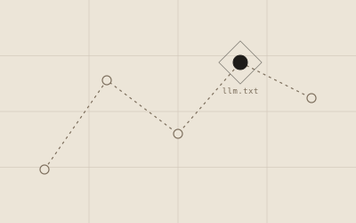
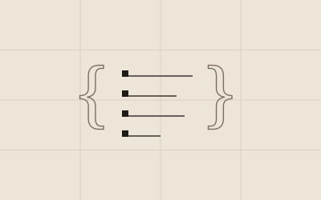
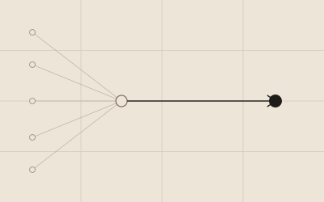
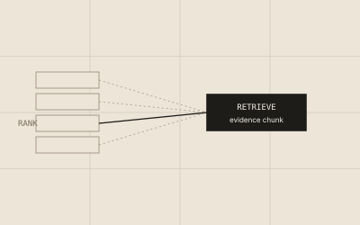
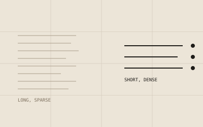

What llms.txt actually changes for AI crawlers
Google, OpenAI and Anthropic have all declined to confirm using it. Independent studies across hundreds of thousands of domains find no citation lift, outside one narrow, real use case.
Short, practical write-ups from building retrieval-audit tooling in the open, covering what actually changes AI visibility and what's noise.

Google, OpenAI and Anthropic have all declined to confirm using it. Independent studies across hundreds of thousands of domains find no citation lift, outside one narrow, real use case.
TF-IDF and BM25 score strings, not things. Modern retrieval increasingly resolves ambiguous terms to specific entities, and that changes what content actually needs to do.

Google and Bing confirm schema feeds their AI systems as context. OpenAI, Anthropic and Perplexity haven't said the same, and testing finds no citation lift there.

A page with perfect chunk boundaries is still invisible if no crawler ever reaches it. Crawl budget and AI retrieval readiness are sequential gates, not competing ones.

Ranking orders candidate pages. Retrieval selects the specific passages an AI answer is built from. Google's own documentation confirms both now run as sequential stages.
A page is never the thing matched against a query. It's split into smaller units first, and each one competes independently for retrieval.
Roughly two-thirds of Google searches now end without a click. A separate visibility layer exists beneath it: whether content gets cited as evidence at all.

The word-count-ranking correlation was always about backlinks. Dense retrieval makes the case for information density mechanistic instead.